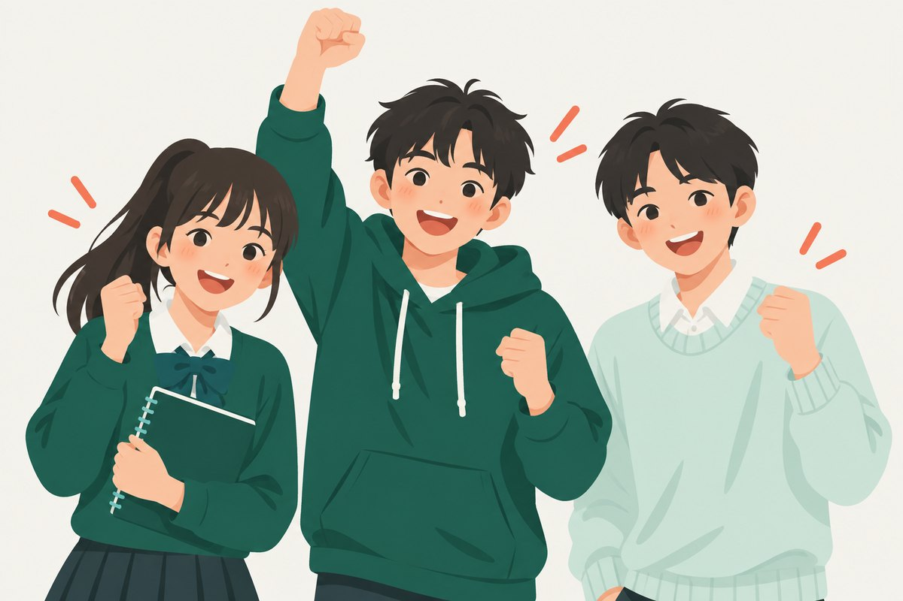

小陪說或打字都可以
請假
媽媽和林老師會收到通知。隊友只會看到「小睿請假」，看不到原因。
LINE
媽媽晚上講給我聽
20:415G
Tandelo
孩子卡在哪，
就從哪裡開始。
兩分鐘就好。先告訴我你想要什麼，再看看你卡在哪。不是考試，沒有分數。
小陪 · AI 教練
我不會給你答案，我會問你怎麼想的。
下載、登入、每天的練習都免費
20:425G
小陪
我是陪你跑的，不是催你的。先讓我知道你要去哪。
這學期，你最想要的是？
20:435G
選一個最快的方式。
這只是初步。之後每天的練習會讓我越來越準，不用一次考完。
21:035G
初步結果 · 花了 90 秒
你不是不會不等式，
你不是不會不等式，
你只卡在一步。
不等式的意思大於、小於、數線
會了兩邊加減同一個數移項
會了3
兩邊乘除負數你知道要變號，但說不出為什麼
卡在這4
係數是分數還沒碰到
下一步5
應用題：把文字變成不等式段考會考
再下一步小陪幫你分好了：哪些要人教，哪些自己練就好
乘除負數 · 需要有人解釋 → 小隊課移項粗心 · 練 3 題再測就好，不用加課應用題 · 先放著，走到再說
不是每個缺口都要上課。能用短練習補起來的，就不多花你的時間和家裡的錢。
小陪
三題裡你有兩題覺得「沒問題」的，其實都錯在同一步，不是粗心。這是初步判斷，之後每天練習我會越來越準。有 5 個人現在跟你卡在同一步。
21:045G
點幾格你有空的時間。
早上8–12下午12–17傍晚17–19晚上19–21睡前21–22
21:055G
✓ 湊好隊✓ 林老師答應了等你加入
找到一起
突破的同伴。
國二數學 · 不等式

為什麼是這一隊？
你們六個都走到同一段：除以負數時，不等號為什麼要改變方向。接下來 8 週一起把這段路走完。
−2x > 6→x > −3點一下看它翻過去
同一隊，每週一起學
睿
你
加入前只看得到頭像顏色。名字和聲音，要到第一堂課大家都同意才公開。
每週三 19:00–19:50第一堂 9/23（三）· 試上，不滿意不收費
先送出意願，家長同意與人員確認後才成班。
21:065G
林
林老師
國中數學 · 帶過 142 隊
聽林老師說 30 秒
78%學生隔三天還講得出來
142帶過的小隊
4.2平均每堂講話不到四成
擅長帶哪一種卡住
知道規則、說不出為什麼看到分數就慌粗心型另有老師更適合
上一隊下課後，老師留的話
「你們今天互相講的那十分鐘，比我講的二十分鐘有用。下週從分數係數開始。」
這裡沒有星星評分。我們只看學生過幾天還會不會。
21:085G
意願送出了。
你按了「我想加入」不扣任何費用
完成2
媽媽在 LINE 收到邀請看診斷摘要、同意、付款
等她3
滿 4 人付款就成班林老師已經答應帶這一隊 · 目前 3 / 6 人
4
9/23 第一堂試上不滿意不收費
20:345G
狀態
小陪的觀察剛剛看過你的數據
今天昨晚睡 5.9 小時，比平常少；離段考還有 18 天，不急。今天我只排兩件小事。
心情紀錄今天
還沒記點下面一個，記下現在的心情。只有你看得到。
身體與時間
我的目標：段考數學 85
我想要
目標分數 85
每天最多
85 分、每天 30 分：到得了，還有餘裕。
20:355G
9 月 21 日 · 星期一
小睿，今天
照你的步調。
小陪 · AI 教練
你的小隊成班了。昨晚睡得少，今天我只排兩件事。
我的小隊 · 還有 2 天
不等式，
為什麼要變號？
睿
這週小隊一起：六個人合起來點亮 6 個點，林老師會錄一段話給你們。
目前 2 / 6 · 沒有誰拖累誰，只算合計
今天一起完成
22:30 關燈剩下的我明天排。爸媽也不能關這條。
20:385G
上週你寫的：
−3x ≤ 12x ≤ −4
再試一次，答案應該是哪一個？
有想法了再按提示，一次一級。
20:525G
小陪
為什麼兩邊除以負數，不等號要反過來？用你自己的話講，30 秒就好。
按一下開始，再按一下結束
你說的（錄音不保留，只留下面三個勾）⋯
講得出為什麼不是背規則
換一題也做得出來小陪等一下出一題新的
過幾天還在9/24 我再問你一次。之後換個情境也會用，才是真的會
20:585G
小陪
你今天已經說給我聽一次了，很夠。想再練也可以，明天我還在。
免費就有的
找卡點每天一份練習每天說給我聽 1 次我的路線看小隊邀請
Tandelo Plus
讓小陪整天都在。
NT$299／月 · 上小隊課的那 8 週免費附
付錢的是家人，不是你。你只要決定要不要問。
週三5G
18:50
9 月 23 日 星期三
林
林老師
我已經看過你們六個各卡在哪。等一下見。
一天最多四次提醒，每次都能說不。段考那一週自動變安靜。
19:585G
下一堂 · 9/30（三）19:00分數係數
六個人，
都講出來了。
0 / 6下課後說給小陪聽
睿
安
宇
晴
哲
恩
林
林老師給你們的 50 秒
「阿哲今天問的那個問題，是全隊最好的問題。小睿，你講給小安聽的那段很清楚。下週：分數係數。」
20:315G
小陪
三天了。這題我不給提示，錯了也沒關係，只是我就知道要再陪你走一次。
−½x > 3
20:105G
第 8 週 · 這段路走完了
8 週前，
8 週前，
你只卡在一步。
兩邊乘除負數第 1 週
已掌握係數是分數第 3 週
已掌握應用題：文字變不等式第 6 週 · 你教會了小安
已掌握聯立不等式第 8 週
會了 · 等再測7已掌握的點
8/8小隊完賽
+21段考數學（你選擇分享）
下一段路：二元一次聯立
你們六個有五個想繼續同一隊。林老師也願意再帶 8 週。阿哲要去另一隊練幾何，他說謝謝你們。
媽媽會在 LINE 收到這 8 週的一頁回顧，由她決定要不要續。